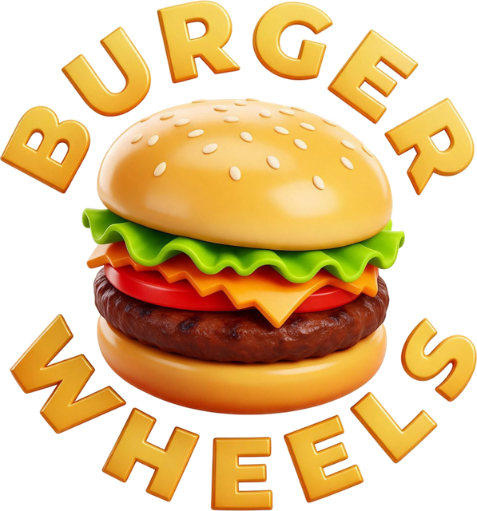
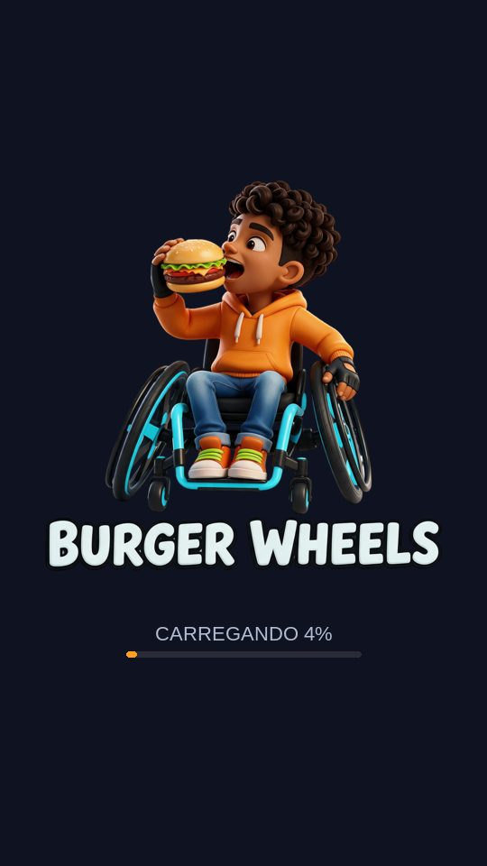

Burger WheelsNo estilo dos runners que todo mundo conhece, com uma inversão no coração do design: a pista é o asfalto da avenida mais famosa de São Paulo, e o que atrapalha o caminho é exatamente o que atrapalha uma pessoa cadeirante na vida real.
MASP, torre espelhada, antena de rádio, banca de jornal, prédio clássico, postes, muro grafitado. Calçada de mosaico português dos dois lados e figurantes da avenida: BBoy, violeiro, moça ao celular, guarda.
Boca de lobo aberta, entulho de obra, bloco de concreto sem rampa, carro parado na faixa de pedestres, faixa de obras pendurada baixa. Cada batida termina com a frase: "A cidade falhou na acessibilidade".
A tese do protótipo: um runner sobre acessibilidade precisa ser acessível. O jogo tem uma camada sonora completa, feita para quem não enxerga a tela.

O protótipo roda direto no navegador, em formato de celular. Está no notebook? Envie o link para o seu WhatsApp e abra no telefone: a experiência foi feita para deslizar com o dedo.
O protótipo está publicado, jogável no celular e no computador, com a tese central já funcionando: um runner sobre acessibilidade que pessoas cegas conseguem jogar. Feito em Unity, a mesma engine dos grandes jogos mobile, com cenário 3D da Paulista, sistema de som próprio e pipeline de produção pronto para escalar.
CEO da Agô Startup, especialista em diversidade, equidade e inclusão pela Claro, formado em Inteligência Artificial pela PUC, No Code e Human Studio e pós-graduado em Neurociência e Psicologia Positiva pela PUC. Coautor do livro Manual Anticapacitista, com Carol Ignarra. Speaker TEDx, músico e curador musical da Natura Musical, bacharel em Comunicação Social, fundador da ONG Movimento SuperAção e Personalidade 2018 no Prêmio Ações Inclusivas do Governo do Estado de SP.
A pista é o asfalto da avenida mais famosa de São Paulo. O que atrapalha o caminho é exatamente o que atrapalha uma pessoa cadeirante na vida real.
MASP, torre espelhada, antena, banca de jornal, postes, muro grafitado e figurantes da avenida.
Boca de lobo, entulho de obra, bloco sem rampa, carro na faixa, faixa de obras baixa. Cada batida termina com "A cidade falhou na acessibilidade".
Um runner sobre acessibilidade precisa ser acessível. O jogo tem uma camada sonora completa, feita para quem não enxerga a tela.
CEO da Agô Startup, especialista em diversidade, equidade e inclusão pela Claro, formado em Inteligência Artificial pela PUC, No Code e Human Studio e pós-graduado em Neurociência e Psicologia Positiva pela PUC. Coautor do livro Manual Anticapacitista, com Carol Ignarra. Speaker TEDx, músico e curador musical da Natura Musical, bacharel em Comunicação Social, fundador da ONG Movimento SuperAção e Personalidade 2018 no Prêmio Ações Inclusivas do Governo do Estado de SP.